本模块所有 stage 评级、TVL、协议参数均标注「截至 2026-04」。L2 生态变化极快，正式生产部署前请用 L2BEAT 与各协议官方 docs 复核。
读者画像：刚学完 EVM/Solidity，目标是理解 L2 直觉并选一条 L2 部署合约。
学习目标：读完主线（第 1–8 章）能回答「我该把合约部署在哪条 L2、为什么」。附录 A–H 供深挖。
承上：模块 06 把 DeFi 拆完了，但所有协议都卡在主网 Gas——AMM 一笔 swap $30、清算机器人抢不过、长尾资产根本没法做。本模块换镜头：把执行外包到 L2，把 DA 拆出来当独立资源，把跨链桥当独立协议看。理解这层，DeFi 才有亚秒级确认 + $0.01 手续费的物理可能，模块 06 的协议设计才有真实落点。
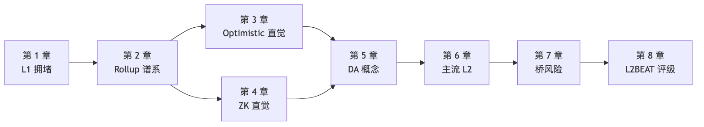
TL;DR：L1 有三道物理墙（gas limit、12s 出块、家用电脑节点），L2 是唯一出路，但用 sequencer 中心化和桥风险换来低费用。
钩子：2021-09 一个深夜，你想用 Uniswap 把 $200 USDC 换成 ETH，确认页 gas 费 $84。等到凌晨三点再试：还是 $54。Twitter 上刷屏：「以太坊已经成了富人的玩具。」
L2 不是技术爱好者的锦上添花——它是 L1 物理上压不下来成本后剩下的唯一出路。
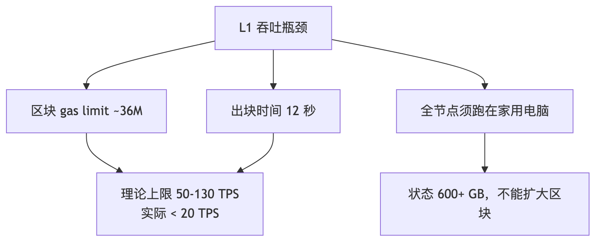
「家用电脑能跑全节点」是硬约束，L1 永远不走大区块路线。Vitalik 2020 年明确 rollup-centric roadmap：L1 只做 DA + 结算 + 共识，扩容外包给 L2。
L2 fee = L2 execution gas + (L1 DA cost / batch size) + (proof cost / batch size)
| 时期 | 用户感知费用 |
|---|---|
| 4844 之前（~2024-03） | $0.5–$3 |
| 4844 之后（blob 上线） | $0.005–$0.05 |
| Fusaka + BPO2（2026-01 起） | $0.005–$0.05（DA 已接近 0） |
2024 年 blob 上线后 DA 成本塌到 1 wei，rollup 成本中心转向 execution 与 prover。EIP-4844/KZG 数学细节见附录 A。
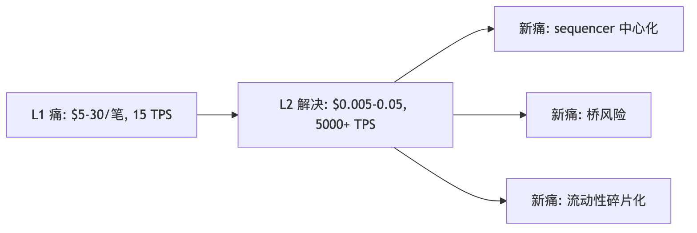
章末：L2 不是免费午餐。理解这三个新痛点是本模块后半段的核心。
TL;DR：Rollup = 执行在 L2，数据 + 结算在 L1。两大派别 = 两种审计风格。
类比：L1 = 法庭（慢、贵、严谨）；L2 = 工地（快、便宜，每天打包施工记录送进法庭）。
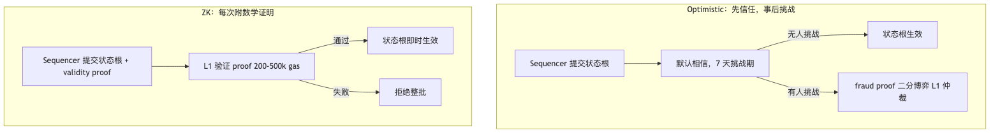
| 维度 | Optimistic | ZK |
|---|---|---|
| 提款延迟 | 7 天 | 约 5-30 分钟（视 prover 负载） |
| Prover 成本 | 仅挑战时产生 | 每 batch 都要生成（硬件密集） |
| EVM 等价性 | 几乎完美 | Type-1 到 Type-4 不等 |
| 安全假设 | ≥1 诚实挑战者 | 电路正确 + 可信设置安全 |
| 代表 | Arbitrum / OP / Base | zkSync / Scroll / Linea |
常见误解：「ZK 比 Optimistic 安全」——两者安全假设不同，都不是绝对安全。ZK 历史上出过电路 under-constrained bug；Optimistic 事故主要是 sequencer 审查或 multisig 风险。
Rollup vs Sidechain：Polygon PoS 是独立 PoS 侧链，不继承以太坊安全，不在 L2BEAT 里。
章末：两派核心差异 = 争议解决时点。Optimistic 事后挑战，ZK 事前证明。欺诈证明工程细节见附录 C，ZK proof system 对比见附录 D。
TL;DR：Optimistic 默认信任 sequencer，7 天内任何人可挑战。挑战流程是「二分博弈」，最终让 L1 仲裁一条指令。
场景：你是 Arbitrum 用户，刚把 100 USDC 转给朋友。Sequencer 几秒确认，同时向 L1 提交「这批交易跑完后状态根是 X」。但 sequencer 可能撒谎——谁来抓，怎么抓？
L1 不能重放整个 batch（成本炸到火星）。解法是二分：
1000 笔 → 500 笔 → 250 笔 → ... → 1 条 EVM 指令
↑ 每轮双方各提交一个 hash，找到分歧点 ↑
log₂(1000) ≈ 10 轮，L1 只仲裁一条指令，整个过程只在 L1 写几十个 hash。这使欺诈证明在 L1 上经济可行。
7 天 = ①watcher 发现错误状态根 + ②挑战交易在 L1 被打包 + ③极端情况的社会层缓冲。代价是提款慢，这是 Across 等即时桥的市场原因（流动性提供商垫付资金赚取垫资成本）。
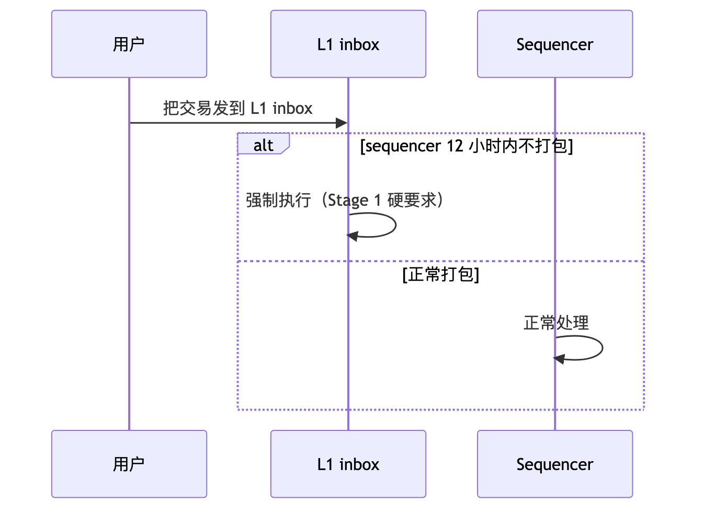
章末：Optimistic 的工程细节（Cannon / BoLD 实现对比）见附录 C。
TL;DR：ZK Rollup 每个 batch 附一份数学证明，L1 验证通过即终局，无需等待。工程师关心三件事：proof 多大、验证多贵、prover 多慢。
场景：同样把 100 USDC 转给朋友，如果是 zkSync 而非 Arbitrum，约 5-30 分钟（视 prover 负载）后资金就到 L1——因为 ZK rollup 不需要「事后抽查」，每个 batch 上链时附一份数学证明，L1 用 50 万 gas 验完，通过即终局。
ZK 证明 = 快递查验码。快递员（sequencer）交货时附上一串验证码，收件方（L1）扫一下就确认货物正确，不需要亲自清点每一件——这就是「有效性证明」的直觉。
「零知识」在 rollup 里不是必需的——严格说叫「validity rollup」更准确，行业沿用了 zk 这个名字。
| 类型 | EVM 等价度 | 代表 | 部署注意 |
|---|---|---|---|
| Type-1 | 完全等价，能验证主网区块 | Taiko | 最兼容 |
| Type-2 | EVM 等价，内部状态树不同 | Scroll、Linea | 主网工具链开箱即用 |
| Type-4 | Solidity 兼容，VM 完全不同 | zkSync Era（EraVM） | 需 zkSolc 编译 |
选型参考：复用主网工具链（Hardhat/Foundry）→ Type-2；最高 prover 性能 → Type-4；隐私 → Starknet（Cairo VM）。
章末：SNARK vs STARK 详细对比、各 zkEVM 证明系统选型见附录 D。
TL;DR：DA = 原始交易数据可被任何人下载（≠ 永久保存）。DA 丢失 = 提不了款。
思想实验：假设 sequencer 提交了正确的状态根（甚至带 ZK 证明），但就是不公布原始交易数据。表面上链很正常——直到你想提款，需要构造 Merkle 证明，但没有原始数据重建 Merkle 树。你的钱冻在 L1 合约里。 这就是 DA 是「命门」的原因。
blob = 临时仓库。Ethereum blob（EIP-4844）存约 18 天就丢——但这已经够了。提款和挑战只需要数据在「挑战期内」可获取，不需要永久保存。DA 不等于持久性。
| DA 位置 | 安全等级 | 例子 |
|---|---|---|
| Ethereum blob（L1） | 等价 Ethereum | Arbitrum / OP / Scroll |
| 外部 DA 链（Celestia 等） | ZK/OP 数学 + 外部 PoS | Manta Pacific |
| DAC（少数委员） | 需信任委员会不串谋 | Arbitrum Nova |
| 用户自选（Volition） | 用户自己决定 | zkSync Era |
关键：DA 不在 L1 上，就不能等同于 Rollup 安全。
EIP-4844 后 blob_base_fee 长期 ≈ 1 wei（接近免费）。外部 DA（Celestia/EigenDA）的成本优势大幅减弱。
外部 DA 仍有意义的场景：极致吞吐（EigenDA 100 MB/s）、Cosmos 生态对齐（Celestia）、blob 拥堵时的缓冲。
DA 选型速查：DeFi 主资金 → Ethereum blob；链游/低值高频 → Validium/DAC；极致吞吐 → EigenDA。DA 层详细对比（Celestia/EigenDA/Avail）见附录 E。
章末：EIP-4844 blob 字段、KZG 承诺数学见附录 A。
TL;DR：截至 2026-04，Arbitrum + Base 合计占 L2 TVS 75%+。OP Stack 已赢得框架战争。新项目优先选 Stage ≥1 的链。
选型心法：先看 L2BEAT Stage（安全底线），再看工具链兼容度，最后看生态流量来源。
Arbitrum One（Optimistic，Stage 1）：技术最深——双轨执行（native + WAVM）、BoLD permissionless 欺诈证明、Stylus（Rust/C++ 合约 10-100× 性能）。Arbitrum + Base 合计占 L2 TVS 75%+。适合：DeFi 主资金、需要 Rust 合约优化的场景。
OP Mainnet（Optimistic，Stage 1）：框架战争赢家——OP Stack 派生链（Base、Mode、Worldchain、Ink、Unichain 等数十条）共享 sequencer 规划和 OP Token 治理（Superchain）。适合：想接入 Superchain 流量、生态优先的项目。
Base（Optimistic，Stage 1）：Coinbase 自营，MetaMask 之外最大的 Web2 → Web3 入口。USDC 直接打入交易所、App Store 推送。月 sequencer 收入 $1–3M，是 sequencer 中心化商业价值的最佳样本。适合：面向 Coinbase 用户的消费级 dApp。
zkSync Era（ZK，Stage 0）：ZK 系唯一独立 rollup 框架（ZK Stack / Hyperchain）、原生账户抽象（所有账户即合约）、Volition（每笔交易自选 Rollup/Validium）。底层 EraVM 不是 EVM，需 zkSolc 编译器。适合：需要原生 AA 或 ZK Stack 部署自己链的场景。
Scroll（ZK，Stage 1）：ZK 阵营第一个达 Stage 1，Euclid 升级（2025-04）换用 OpenVM RISC-V zkVM，吞吐 5×、成本 -50%。Type-2 EVM 等价，主网工具链（Hardhat/Foundry）开箱即用。适合：需要 ZK 快速终局 + 完整 EVM 兼容的场景。
Linea（ZK，Stage 0）：Consensys 自营，MetaMask 集成最深，LXP 积分吸引流量。2024-06 Velocore 黑客事件中手动暂停 sequencer——这是它仍 Stage 0 的核心原因。适合：MetaMask 用户基础的项目，但需接受当前 Stage 0 风险。
| 需求 | 推荐 |
|---|---|
| 通用 DeFi / 主资金，要高安全 | Arbitrum One 或 Base（均 Stage 1） |
| 想加入 Superchain 生态 | OP Mainnet / Base |
| 需要 ZK 快速终局 + 完整 EVM | Scroll（Stage 1） |
| 面向 Coinbase / Web2 用户 | Base |
| 需要 Rust/C++ 合约 | Arbitrum One（Stylus） |
| 原生账户抽象 | zkSync Era |
| 链游 / 低值高频 | Arbitrum Nova（AnyTrust DAC） |
章末：各链详细架构、Stage 历史、sequencer 去中心化进度见附录 H。
TL;DR：桥占 DeFi TVL < 10%，但占被盗资金 > 50%。两个故事说明一切：Wormhole 的签名 bug、Nomad 的「复制粘贴众包抢劫」。
钩子：2022 年 8 月 1 日，Nomad 桥合约被掏空 $190M，用时不到 4 小时——不是精心策划的 APT 攻击，而是上百个普通地址复制粘贴同一笔交易，只改 to 字段。
Nomad（2022-08，$190M）：升级合约时把 acceptableRoot 映射初始化成 0x00——结果所有空 messageProof 都被接受，任何人构造一笔假提款、其他人复制 calldata 只改收款地址，即可通过。根因：mapping(bytes32 => bool) 零值（false）+ 升级 bug 把零值变成 true。教训：升级合约要有完整 invariant 测试；公开 mempool 让单个 bug 被数百人放大。
Wormhole（2022-02，$326M）：攻击者在 Solana 端用 fake account 替换 system program，跳过了签名验证，直接 mint 120,000 wETH。根因：没校验 sysvar.key == &solana_program::sysvar::instructions::id()。教训：跨链消息必须严格校验 sender/signer；Solana account model 比 EVM 复杂，更易出 account 混淆 bug。
| 时间 | 项目 | 损失 | 一句话死因 |
|---|---|---|---|
| 2022-02 | Wormhole | $326M | Solana 端没校验 sysvar 是真的 sysvar |
| 2022-03 | Ronin | $625M | 9 个验证者 5 个被钓鱼，含临时授权未撤销 |
| 2022-08 | Nomad | $190M | 升级时 zero-root 初始化，众包复制粘贴 |
| 2023-07 | Multichain | $130M+ | CEO 被带走，私钥跟着没了 |
| 2024-01 | Orbit Bridge | $80M | 7 个 KYC 验证者私钥同时失陷 |
章末：5 起事故完整代码级复盘（含 Ronin/Multichain/Orbit）见附录 G。跨链消息协议（LayerZero/Wormhole/Hyperlane/CCIP/CCTP）对比见附录 H。
TL;DR：Stage 0 = 教练随时踩刹车；Stage 1 = 新手独立开车有限制；Stage 2 = 老司机（截至 2026-04 无人达到）。
场景：你点开 L2BEAT，看到 Arbitrum 标「Stage 1」、zkSync Era 标「Stage 0」、Stage 2 一栏空着。为什么？
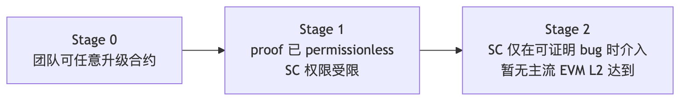
| Stage | L2 |
|---|---|
| Stage 2 | 暂无主流 EVM L2 |
| Stage 1 | Arbitrum One、OP Mainnet、Base、Scroll、Ink、Unichain |
| Stage 0 | zkSync Era、Linea、Starknet、Taiko、Blast、Mantle 等 |
Stage 评级 ≠ 安全评级。Blast 和 zkSync Era 同为 Stage 0，但 Blast 因 fraud proof 未上线风险更高。实际评估还需看：sequencer force inclusion 延迟、合约审计、bug bounty。
章末：L2BEAT Stage 的数学定义见附录 B。
下一站：L2 里最硬核的支柱是 ZK——它不仅压缩 rollup 计算，还能证明任意陈述。本模块把 ZK 当成「rollup 工具」介绍，但它的能力远不止此。下一站模块 08 系统看 SNARK/STARK/zkVM/zkML，把 ZK 从「rollup 加速器」升级到「通用证明系统」，理解为什么 ZK 是未来十年密码学最值得押注的方向。
本附录对主线第 5 章「DA 临时仓库类比」做工程级展开。
| 时间 | 事件 |
|---|---|
| 2024-03-13 | Dencun 升级，4844 上线，blob target 3 / max 6 |
| 2025-05 | Pectra（EIP-7691），target 6 / max 9 |
| 2025-12-03 | Fusaka（EIP-7594 PeerDAS），1D 采样上线 |
| 2026-01-07 | BPO2，target 14 / max 21 |
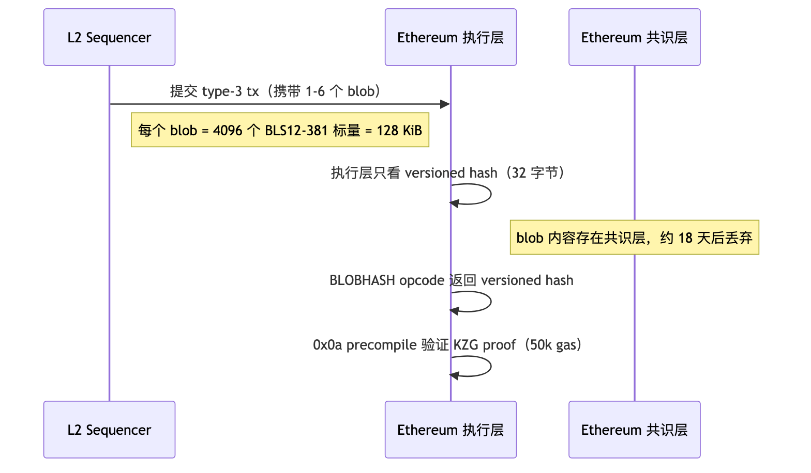
| 结构 | 大小 | 用途 |
|---|---|---|
| Field element | 32 字节 | BLS12-381 标量 |
| Blob | 128 KiB（4096 field elements） | 一个数据块 |
| KZG commitment | 48 字节（G1 群元素） | blob 的多项式承诺 |
| Versioned hash | 32 字节 | 0x01 ‖ sha256(commitment)[1:] |
| KZG proof | 48 字节 | 「blob 在某点取某值」的证明 |
类比：把 128 KiB 的 blob 数据想成 4096 个 y 坐标，连成一条多项式曲线。KZG 就是给这条曲线拍一张 48 字节的合影——任何人想问「曲线在 x=42 时 y 是多少」，提供 48 字节证明 + y 值，验证者一个 pairing 就能确认没骗他。
技术描述：Blob = 多项式 P(x) 的 4096 个采样值，压缩成 48 字节承诺（多项式在秘密点 τ 的椭圆曲线取值）。承诺不泄漏系数（τ 未知），48 字节 proof + 一个 pairing 即可验证「某点取某值」。
EVM 不能直接读 blob 内容，但 0x0a precompile 可验证 KZG proof：「blob 在点 z 取值 y」—— 50k gas。这是 rollup 连接链下证明系统与 blob 的关键接口。
ZK Rollup 的 blob 技巧：prover 同时生成 blob 的 KZG commitment 和 ZK 内部承诺，再生成「两个承诺指向同一数据」的等价证明（proof of equivalence）。这样 ZK 系统不需要为 KZG 写电路，KZG 验证完全在 0x0a precompile 里做。
PeerDAS 让验证者从「全体读者」变成「抽样读者」——不用每人读完整本书，每人随机翻几页，全网拼起来确认没有缺页就行。
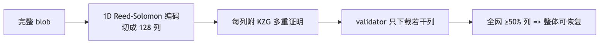
PeerDAS 是 blob 容量能从 target 3 扩到 14 的物理基础。BPO2（2026-01）正是基于 PeerDAS 健康后才做的提速。
本附录给出 L2BEAT Stage 评级的完整形式化标准。
按 L2BEAT Stage framework 与 OP Stack Stage 1 spec：
| 条件 | 细节 |
|---|---|
| Proof system | permissionless：任何人能挑战（Optimistic）或提交证明（ZK） |
| Security Council | ≥8 人，≥50% 独立外部成员，多签 ≥75% |
| Upgrade delay | ≥7 天（Emergency 路径除外，但 Emergency 需 SC 多签） |
| Force inclusion | 用户不依赖 sequencer 可强制提款 |
| Data availability | 数据可被任何人下载（L1 blob 或可验证的外部 DA） |
| 条件 | 细节 |
|---|---|
| SC 介入范围 | 仅在「可证明的 on-chain bug」时——prover 宕机或合约自我矛盾 |
| 合约升级 | 不能任意升级，只能在可证明 bug 修复路径上升级 |
| Proof system | 完全自治，无人工干预窗口 |
| 维度 | 绿（safe） | 黄（warning） | 橙（concerning） | 红（critical） |
|---|---|---|---|---|
| State Validation | permissionless proof | 白名单挑战者 | proof 未激活 | 无 proof |
| Data Availability | L1 blob | 外部 DA + 证明 | DAC 少数委员 | 链下无验证 |
| Exit Window | ≥30 天 | 7-30 天 | 1-7 天 | <1 天或无 |
| Sequencer Failure | force inclusion < 1 天 | 1-7 天 | > 7 天 | 无 force inclusion |
| Proposer Failure | permissionless 提案 | 多个提案者 | 单一提案者 | 无人能提案 |
| L2 | Stage | 距 Stage 2 的卡点 |
|---|---|---|
| Arbitrum One | Stage 1 | SC 仍有 instant upgrade 权 |
| OP Mainnet | Stage 1 | SC 仍有 instant upgrade 权 |
| Base | Stage 1 | 跟随 OP 路线 |
| Scroll | Stage 1 | prover 需更完善自治机制 |
| zkSync Era | Stage 0 | permissionless proof 未上线 |
| Linea | Stage 0 | sequencer 单点 + SC 权限 |
| Blast | Stage 0 | fraud proof 未上线（最高风险 Stage 0） |
本附录对主线第 3 章的直觉做工程级展开。
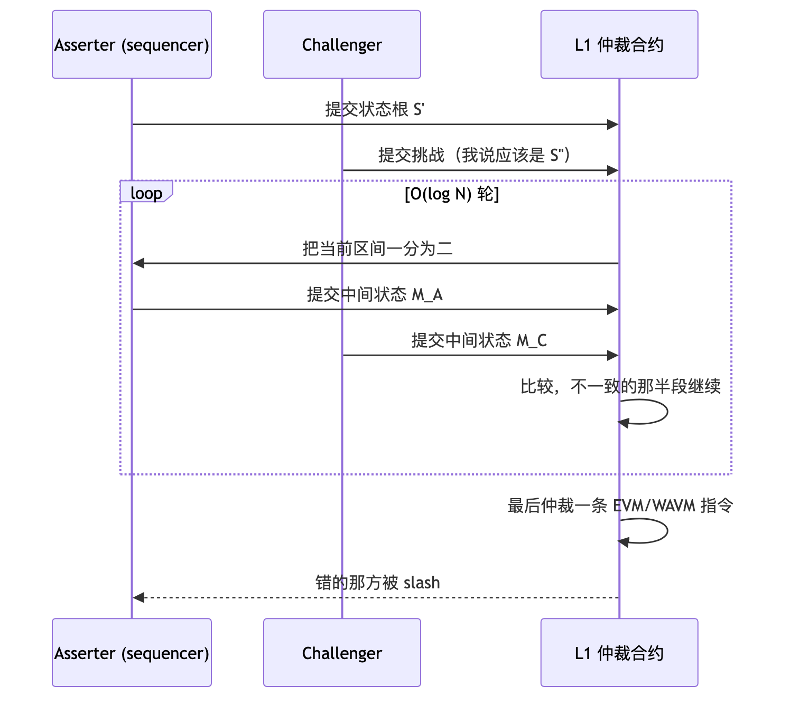
复杂度：N 笔交易二分 O(log N) 轮，每轮只写一个 hash 到 L1。
| 维度 | Cannon（OP Stack） | BoLD（Arbitrum） |
|---|---|---|
| 二分目标指令集 | MIPS（Geth 编译为 MIPS） | WAVM（ArbOS 双轨 native + WAVM） |
| 选 ISA 原因 | Go 编译成 MIPS 简单 | ArbOS 已有 WAVM 执行路径 |
| Permissionless | 有限白名单 → 2024 移除限制 | 完全无许可（先达成） |
| Bounded delay | 7 天上限 | 设计保证有界延迟 |
| 抵押 | 8 ETH（OP 默认） / 0.08 ETH（Base） | 配置化 ETH |
| 主网上线 | 2024-06 OP Mainnet / 2024-10 Base | 2025 Arbitrum One，已稳定 1 年+ |
Arbitrum / OP 均最接近 Stage 2，但 Security Council 仍保留 instant upgrade 权限——ZK 电路 bug 历史频发，团队不敢完全放弃紧急升级窗口，这是卡在 Stage 1 的根因（L2BEAT Arbitrum）。
用户把交易发到 L1 inbox 合约，sequencer 必须在 12 小时内打包（Arbitrum / OP / Base 实际配置）。超时则任何人可强制执行——这是 Stage 1 的硬要求，保证 sequencer 审查最坏情况下用户仍能在 7 天内提款。
本附录对主线第 4 章「有效性证明直觉」做工程级展开。
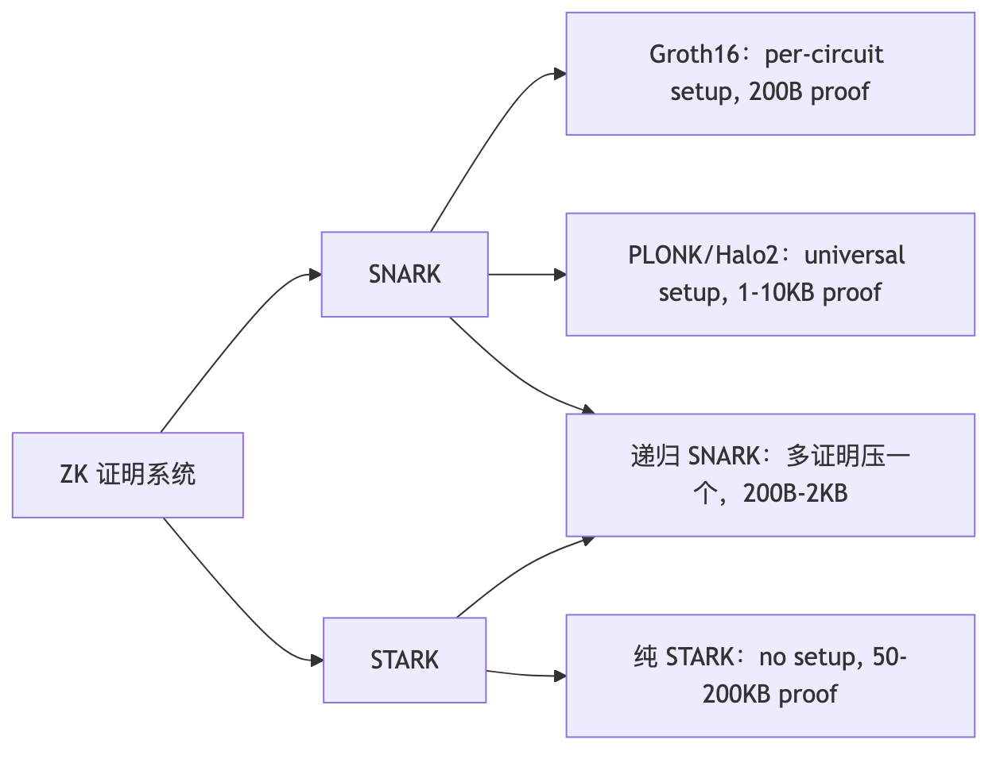
| 系统 | 可信设置 | proof 大小 | verify 成本 | 代表 |
|---|---|---|---|---|
| Groth16 | per-circuit | 200B | ~200k gas | 早期 zkSync Lite |
| PLONK / Halo2 | universal | 1–10 KB | 200–500k gas | Aztec、应用层 |
| STARK | none | 50–200 KB | 1–5M gas | Starknet、zkSync Boojum 内层 |
| 递归 SNARK | universal | 200B–2KB | 200–500k gas | 几乎所有现代 zkEVM 落 L1 |
| L2 | 证明系统 | 特点 |
|---|---|---|
| zkSync Era | Boojum（STARK 内 + SNARK 外） | 高吞吐，5–15 分钟/batch |
| Scroll | OpenVM（RISC-V zkVM，Plonky3） | Type-2，3–10 分钟/batch |
| Linea | Vortex / PLONK | 5–12 分钟/batch |
| Starknet | Stone / S-two STARK | 无可信设置，10–30 分钟/batch |
| Taiko | SP1 + RISC0 + TEE 多证明 | 任一通过即可，避免单证明 bug |
EVM 编译成 RISC-V，通用 zkVM（SP1、Risc Zero、OpenVM）证明 RISC-V 指令——证明系统可复用，不再需要针对 EVM 写专用电路。Scroll Euclid 升级（2025-04）是最大的生产实例。
本附录对主线第 5 章「DA 临时仓库」做生产级展开。
| 维度 | Ethereum blob | Celestia | EigenDA | Avail |
|---|---|---|---|---|
| 信任根 | Ethereum 共识 | TIA PoS | restaked ETH + DAC | AVAIL PoS |
| 吞吐（2026-04） | 14×128KiB/12s ≈ 150 KB/s | 8 MB/6s（Matcha 后 128 MB） | 100 MB/s（DAC） | 4 MB/block |
| DAS | PeerDAS 1D 采样 | Light node DAS | 无 DAS（DAC） | KZG + DAS |
| 数据保留 | ~18 天 | 永久 | DAC commit | ~17 天 |
| 100MB/天年成本 | $1–$50（接近 0） | ~$12,775 | ~$730 | $1500–3000 |
| 典型客户 | 几乎所有主流 L2 | Manta、Eclipse | Mantle、Celo | Polygon CDK 部分 |
架构：Rollup 发布 blob → Celestia 全节点存储 → Light node DAS 验证。出块时间 6 秒，区块大小 8 MB（Matcha 升级后目标 128 MB）。
适合：Cosmos 生态原生、想彻底独立于 Ethereum 经济、主流案例 Manta Pacific、Eclipse。
2026-04 现实：blob 免费后，「Celestia 比 ETH 便宜 50×」论调已不再成立。Celestia 护城河转向 Cosmos 生态对齐 + Dymension RollApp 飞轮。
架构：EigenDA Disperser 切块 → EigenDA Operators（restaked ETH）存数据 → KZG 聚合签名 → 上 L1 commit。吞吐 100 MB/s，不做轻节点 DAS（DAC 模型）。
适合：极致高吞吐（100 MB/s）、想要 ETH 安全对齐的场景。旗舰客户：Mantle。
注意：EigenDA 自身 slashing 条件截至 2026-04 仍未对 AVS 启用，「restaking 安全」仍主要靠 EigenLayer 协议层 slashing。
三条产品线：DA（KZG + DAS）、Nexus（跨链协调层，13+ 链接入，2025-11-28 上线）、Light Client（手机/笔记本可跑）。Avail 定位是「DA + 跨链互操作枢纽」。
DA_cost_per_tx = (compressed_calldata_bytes / DA_capacity_bytes_per_unit) × DA_unit_price
实测（2026-04，一笔 DEX swap 压缩后 200B）：
| DA | 单笔成本 |
|---|---|
| Ethereum blob | ~$0（接近 0） |
| Celestia | ~$0.0007 |
| EigenDA | ~$0.00000037 |
结论：如果不是极致吞吐场景，直接用 Ethereum blob 通常是最佳决策。
本附录对主线第 6 章「sequencer 中心化」做深度展开。
绝大多数 L2 的 sequencer 是单一公司运行的单实例。真实故障： - Linea 2024-06：Velocore 黑客，团队手动暂停 sequencer，整链停摆； - Linea 2025-09：sequencer 卡死，停止出块 40+ 分钟； - Base 2025-08：active sequencer 落后，备用 sequencer 未完成 provisioning，33 分钟无块。
这三件事都不需要黑客攻击。Stage 1 解决「sequencer 作恶」，不解决「sequencer 宕机」。
Based sequencing：直接用 L1 的当前 proposer 当 L2 sequencer。
优点：天然继承 L1 抗审查、无 sequencer 集中化问题、与 L1 同步出块。
缺点：软确认延迟 = L1 出块时间（12 秒）、不能自定义 priority fee 策略、L1 拥堵时 L2 也卡。
Taiko Alethia 是当前最大 based rollup 实现，同时采用多证明（SP1 + RISC0 + TEE）避免单证明系统 bug。
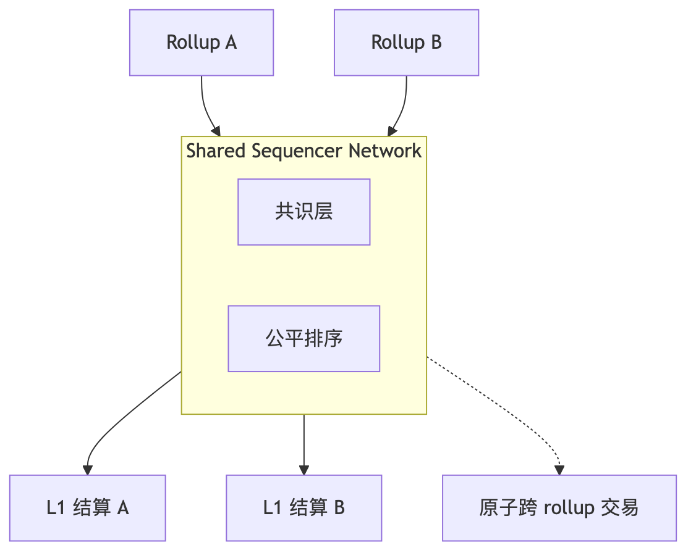
| 项目 | 状态 | 特点 |
|---|---|---|
| Espresso | 2026-02-12 主网启动 | HotShot 共识，与 Arbitrum Orbit 集成中 |
| Astria | 2025-11 关停 | 商业飞轮难启动，客户不愿放弃 sequencer 利润 |
| Radius | testnet | trustless 排序，PVDE |
| Rome | 公测 | 基于 Solana 做 sequencer |
核心商业障碍：shared sequencer 把 L2 的「单实例垄断利润（~80% 净利率）」分给多方，L2 团队预期净利率下降 10-20%——这是 Astria 失败、Espresso 增长慢的根因。
| L2 | 现状 |
|---|---|
| Arbitrum | BoLD（validator）已完成，sequencer 仍 Offchain Labs 单实例 |
| OP Mainnet | Superchain sequencer 选举在测试网 |
| Scroll | Euclid 升级已 permissionless sequencer（2025-04） |
| Starknet | 全 validator 自跑 sequencer，目标 2026 |
| Taiko | based sequencing，天然去中心化 |
五起事故合计 $1.35B+，占 Web3 桥事故损失的半壁江山。
攻击者在 Solana 端铸造 120,000 wETH，抽空 ETH 储备。
根因：signature verification 函数未校验 guardian set 是否真正签名——攻击者用 fake account 替换 system program，bridge 直接 mint wETH。
// 漏洞简化：未校验 sysvar 是真 sysvar
let sysvar = next_account_info(...)?;
// 没检查 sysvar.key == &sysvar::instructions::id()
let signers = parse_sysvar(&sysvar.data)?;
verify_signatures(signers, message); // 攻击者控制 signers
修复：补上 sysvar.key == &solana_program::sysvar::instructions::id() 校验。Jump Crypto 注资 $326M 填窟窿，桥继续运行。
教训：Solana account model 比 EVM 复杂，account 混淆 bug 是高频漏洞类型。
偷走 173,600 ETH + 25.5M USDC，Web3 历史第二大单笔损失。
根因：9 个 validator 多签，签 5 即可。攻击者社工钓鱼员工拿 4 个私钥；第 5 个来自 Axie DAO 临时授权 Sky Mavis 代签——未及时撤销；5/9 达成，调用 withdrawERC20For 提走资产。
教训：multisig 不是 trust-minimized——同一组织/服务器的 N 个 validator 安全等于 1。临时授权必须有强制过期机制。
几小时内被掏空，上百地址复制粘贴交易——史诗级「众包抢劫」。
根因：升级合约时把 acceptableRoot 映射初始化成 0x00：
// 漏洞：升级时 _setAcceptableRoot(0x00, true);
// 结果：所有空 messageProof（默认 0x00）都被接受
function process(bytes memory _message) public {
bytes32 messageHash = keccak256(_message);
require(acceptableRoot[messages[messageHash]], "!proven"); // bypass!
// ... 执行任意 message
}
第一个攻击者构造提款交易，其他人复制 calldata 只改 to 字段即可通过。
教训：升级合约要有完整 invariant 测试；mapping(bytes32 => bool) 零值 + 升级 bug 是致命组合；公开 mempool 让单个 bug 被数百人放大。
链上数据显示是桥自己的私钥发起的合法交易——不是 hack，是「内鬼」。
根因：CEO Zhaojun He 被监管机构带走；CEO 是唯一掌握桥多签私钥的人（其他多签形同虚设）；失联后私钥被某方使用，分批提走资产。桥永久关闭。
教训：桥的运营连续性 = 桥的安全。「跑路风险」是真实存在的。永远要看「私钥实际由谁控制」，不只看「multisig 是几个人」。
7 个 KYC validator 私钥同时失陷（疑似私钥管理基础设施被入侵），攻击者调用 withdraw，多签验证通过，掏空 $80M。
教训：KYC 多签 ≠ 安全——即使 validator 都是机构，私钥管理仍是单点。
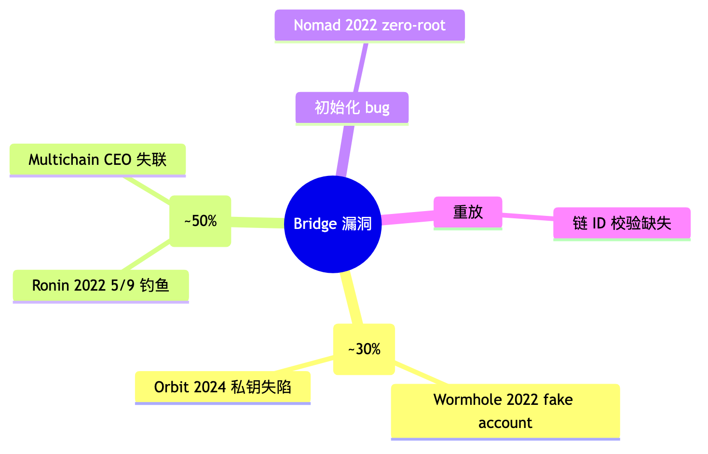
本附录对主线第 6 章「主流 L2」做 L3 / RaaS / 框架级展开。
| 框架 | 维护方 | DA 选项 | 卖点 | 实例 |
|---|---|---|---|---|
| OP Stack | Optimism | blob/Celestia/EigenDA | Superchain 互操作、生态最大 | Base、Mode、Worldchain、Zora、Ink、Unichain… |
| Arbitrum Orbit | Offchain Labs | blob/AnyTrust DAC | Nitro 性能、Stylus（Rust/C++）、自定义 gas token | 链游、xAI 系 |
| ZK Stack | Matter Labs | blob/Validium/Volition | ZK 安全、Hyperchain 互操作、原生 AA | Cronos zkEVM、Sophon |
| Polygon CDK + AggLayer | Polygon Labs | blob/AggLayer/Validium | AggLayer 统一流动性、ZK 或 OP 双栈 | 40+ 链 |
| Starknet (Madara) | StarkWare | blob | Cairo VM、最高 prover 效率 | Pragma、Kakarot |
| 维度 | OP Stack | Arbitrum Orbit |
|---|---|---|
| 互操作 | Superchain OP interop | AnyTrust message |
| 编程语言 | Solidity | Solidity + Stylus（Rust/C++） |
| 适合 | 想接 Superchain 流量 | 最大自主权 + Stylus |
| RaaS | 支持栈 | 实测部署时间 | 典型价格 |
|---|---|---|---|
| Conduit | OP Stack / Orbit / CDK | 23 分钟 | $5k–$30k/月 |
| Caldera | OP Stack / Orbit | 1-2 天（白手套） | 与销售约 |
| Gelato RaaS | OP / ZK / CDK 多栈 | ~30 分钟 | 包月 |
| Alchemy Rollups | OP Stack | 与销售约 | 捆绑 RPC 服务 |
决策建议：第一条 rollup → RaaS 上线；规模到亿美金 TVL → 评估自建 sequencer 把利润内化。
L3 = 在 L2 上再起一条 rollup，settlement 用 L2 而非 L1。
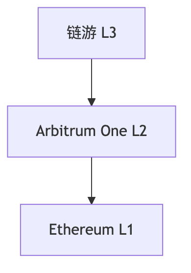
意义：应用专属吞吐 + 定制（gas token / 私有交易）；DA 成本再降约 10×。代价：安全继承自 L2，多一层信任假设。
| L2 | 框架 | Stage | DA | 备注 |
|---|---|---|---|---|
| Arbitrum One | Nitro | Stage 1 | Ethereum blob | BoLD permissionless |
| OP Mainnet | OP Stack | Stage 1 | Ethereum blob | Cannon fault proof |
| Base | OP Stack | Stage 1 | Ethereum blob | 0.08 ETH slash stake |
| Blast | OP Stack（魔改） | Stage 0 | Ethereum blob | fraud proof 未上线，风险最高 |
| Mantle | 自研 + Module | Stage 0 | EigenDA | OP Succinct 迁 ZK 中 |
| Arbitrum Nova | Nitro AnyTrust | Stage 0 | DAC | 社交/链游专用 |
| Unichain | OP Stack | Stage 1 | Ethereum blob | Uniswap Labs |
| Ink | OP Stack | Stage 1 | Ethereum blob | Kraken |
| L2 | zkEVM 类型 | Stage | 证明系统 | DA |
|---|---|---|---|---|
| zkSync Era | Type-4（EraVM） | Stage 0 | Boojum（STARK+SNARK） | blob/Validium |
| Scroll | Type-2 | Stage 1 | OpenVM RISC-V zkVM | Ethereum blob |
| Linea | Type-2 | Stage 0 | Vortex / PLONK | Ethereum blob |
| Starknet | non-EVM（Cairo） | Stage 0 | Stone STARK | Ethereum blob |
| Taiko Alethia | Type-1（based） | Stage 0 | SP1 + RISC0 + TEE 多证明 | Ethereum blob |
| Polygon zkEVM | Type-2/3 | Stage 0（2026-07 退役） | Plonky2 | Ethereum blob |
| Aztec | non-EVM（Noir） | pre-stage | Ultra Honk | Ethereum blob |
| 协议 | 验证模型 | 强项 |
|---|---|---|
| LayerZero v2 | 应用可配置 DVN 集 | OFT 标准，70+ 链，~75% 市占 |
| Wormhole | 19 个 Guardian 多签 | Solana / 非 EVM 覆盖最强 |
| Hyperlane | 应用部署自己的 ISM | permissionless 部署，自建 rollup 互通 |
| Chainlink CCIP | DON + RMN 双层 | 银行/合规客户，CCT 标准 |
| Circle CCTP | 原生 USDC burn-mint | 唯一 native USDC 跨链 |
| Across | Intent + UMA 乐观验证 | EVM 间 < 1 分钟（relayer 垫付） |
| IBC | light client 验证 | trust-minimized 金标准（Cosmos 系） |
2026 实战决策：USDC 走 CCTP；DeFi 最优速度走 Across；自建 rollup 互通走 Hyperlane；合规客户走 CCIP；Solana 桥走 Wormhole；Cosmos 系走 IBC。
| 术语 | 含义 |
|---|---|
| Rollup | 执行在 L2，数据 + 结算在 L1 |
| Optimistic Rollup | 默认相信 sequencer，错了再挑战 |
| ZK Rollup | 每批次附有效性证明（validity proof） |
| Validium | ZK 证明 + 链下 DA |
| Optimium | Optimistic + 链下 DA |
| Volition | 用户每笔交易自选 Rollup or Validium |
| DA | Data Availability，数据可用性（≠ 持久性） |
| DAC | Data Availability Committee，DA 委员会 |
| DAS | Data Availability Sampling，DA 采样 |
| KZG | Kate-Zaverucha-Goldberg 多项式承诺 |
| Blob | EIP-4844 引入的 128 KiB 数据块 |
| BPO | Blob Parameter Only fork |
| PeerDAS | EIP-7594 分布式 DA 采样 |
| Fraud Proof | 错误状态根的证据（Optimistic 系） |
| Validity Proof | 状态根正确的数学证明（ZK 系） |
| Sequencer | L2 出块者 |
| Force Inclusion | 用户绕过 sequencer 直接发到 L1 inbox |
| Stage 0/1/2 | L2BEAT 安全成熟度评级 |
| AVS | Actively Validated Service（EigenLayer 概念） |
| RaaS | Rollup-as-a-Service |
| Superchain | OP Stack 派生链联邦 |
| Orbit | Arbitrum 派生链生态 |
| Hyperchain | ZK Stack 派生链生态 |
| Type-1/2/3/4 zkEVM | Vitalik EVM 等价度分级 |
| Based Rollup | 用 L1 proposer 当 L2 sequencer |
| OFT | LayerZero Omnichain Fungible Token 标准 |
| ISM | Hyperlane Interchain Security Module |
| CCTP | Circle Cross-Chain Transfer Protocol |
| IBC | Cosmos Inter-Blockchain Communication |
数据截至 2026-04。所有 Stage 评级、TVL、协议参数请以 L2BEAT、各协议官方 docs 实时数据为准。
下一模块：模块 08「零知识证明」——深挖 ZK 电路、SNARK/STARK 数学、Halo2/Plonky3/SP1。